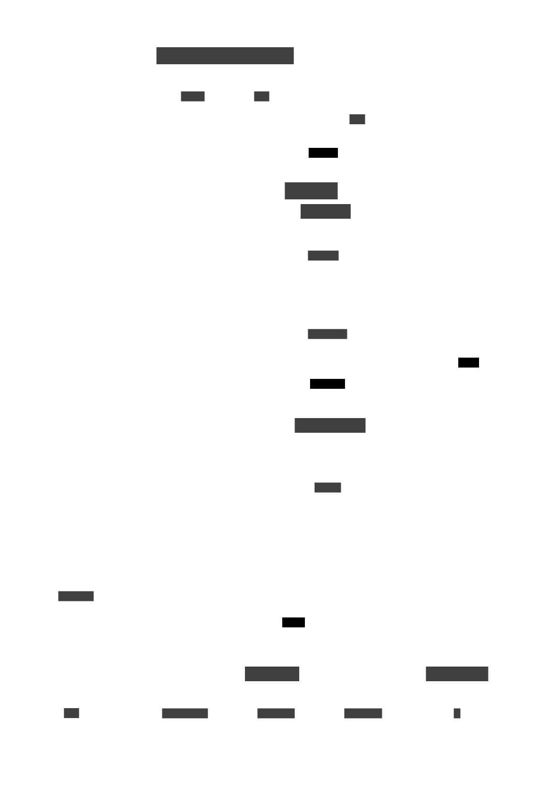

Code
from IPython.core.display import SVG
import os
os.environ["PATH"] += os.pathsep + "$PATH"
SVG(filename='flow.svg')
Guangtao Zhang
December 27, 2023
git clone https://github.com/hardenedlinux/AISecurity-Research-Template
cd AISecurity-Research-Template
docker pull ghcr.io/hardenedlinux/aisecurity-research-template
docker run --platform linux/amd64 -it -v "$(pwd):/work" --entrypoint bash ghcr.io/hardenedlinux/aisecurity-research-template:latest
podman run --platform linux/amd64 -it -v "$(pwd):/work" --userns=keep-id --entrypoint bash ghcr.io/hardenedlinux/aisecurity-research-template-users:latest